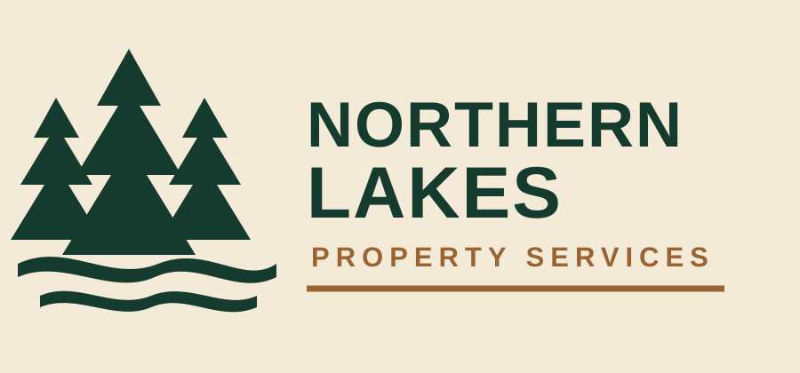

Northwoods Professionalism
Clean communication, documented work, dependable equipment and a consistent commercial presentation.

Northern Lakes Property Services is built around reliable, honest and hardworking property care. The system supports residential, commercial, association and managed properties across Northern Minnesota.
Clean communication, documented work, dependable equipment and a consistent commercial presentation.
Snow, lawn, landscaping, excavation, materials and equipment services managed through one customer history.
Quotes, approvals, schedules, invoices, photos and documents remain connected to the customer and property.
Public vehicle and snow-removal imagery is restricted to Chevrolet Duramax trucks and Boss snow plows unless the owners approve another asset.